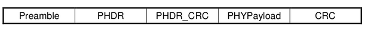
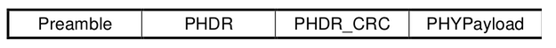
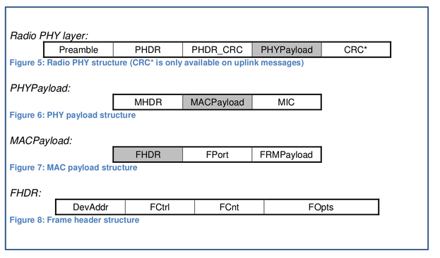

名词解析
上行：终端的数据发送经过一个或多个网关中转到达网络服务器。
下行：由网络服务器发送给终端设备，每条消息对应的终端设备是唯一确定的，而且只通过一个网关中转。
LoRaWAN Classes
LoRaWAN Classes 一共分为3类：Class A,Class B,Class C
Class A:终端先发送，在发送后开启一段时间的接收窗口，终端只有在发送后才可以接收。也就是说上行没有限制，下行的数据只有在上行包发送上来的时候终端才可以接收到。(功耗最低)
Class B:终端和服务器协商好接收的窗口开启的时间以及何时开启，然后再约定的时间进行接收，可以一次接收多个包。（功耗次低）
Class C:终端在发送以外的其他时间都开启接收窗口。更耗能，但通讯延时最低。（功耗最高）
PHY 层数据链路
上行链路消息：

上行链路消息：

其中上行最后还有CRC校验，而下行没有CRC校验。其中PHDR PHDR_CRC CRC都是射频芯片用于校准数据的完整新和一致性用的，并非用户生成的数据。
MAC 层数据链路

由上图可以看到，MAC数据是是作为PHYPayload存在的
其中MAC 层的包有三个部分组成：
- MHDR(MAC层帧头)
- MACPayload(MAC层负载)
- MIC(4字节的校验)
而MACPayload又由三个部分组成:
- FHDR (MAC层负载头)
- FPORT（MAC 层数据的通道号）
- FRMPayload（MAC层负载，加密）
而FHDR又由由四个部分组成:
- DevAddr(终端的ID 4字节)
- FCtrl（帧的控制字 1个字节）
- FCnt （帧的序号 2个字节）
- FOpts（帧配置，字节数不定，大部分情况0个字节）
所以，由协议可知，一个上行包或者下行包中的数据内容有哪些，抛开控制命令不说，主要有终端的ID、包的序号、用户的加密负载。
例如我抓到的一个数据包：
\x40 \x7f \xf8 \x8a \x29 \x80 \x2a \x00 \x02 \x07 \x42 \x87 \x3f \xc7 \xb4 \x22 \x04 \x00 \x84 \x8d \x1b \x06 \x2f \x5b \xbc \x57 \xdb \xf2 \x31 \xde \x49 \x61 \x00 \x86 \x99 \xec \x08 \x61 \xf0 \xb7 \xda \x54 \x0a \xfa \xd1 \x31 \xac \xd0 \x44 \x1b \x4d \xfa \x48 \x77 \x19 \xee \x61 \x14 \xbf \x23 \x52 \xd1 \xe9 \x93 \x79 \x6e \x16 \xd7 \x13 \x2e \x58 \x06 \x54 \xc3 \xd2 \x04 \xba \x52 \xa7 \xc8 \x7a \x0b \x8e
这是一个MAC 层的帧即完整的MACPayload部分
其中
- MHDR:
\x40 - MACPayload-FHDR-DevAddr:
\x7f \xf8 \x8a \x29 - MACPayload-FHDR-FCtrl:
\x80 - MACPayload-FHDR-FCnt:
\x2a \x00 - MACPayload-FPORT:
\x02 - MACPayload-FRMPayload（加密）:
\x07 \x42 \x87 \x3f \xc7 \xb4 \x22 \x04 \x00 \x84 \x8d \x1b \x06 \x2f \x5b \xbc \x57 \xdb \xf2 \x31 \xde \x49 \x61 \x00 \x86 \x99 \xec \x08 \x61 \xf0 \xb7 \xda \x54 \x0a \xfa \xd1 \x31 \xac \xd0 \x44 \x1b \x4d \xfa \x48 \x77 \x19 \xee \x61 \x14 \xbf \x23 \x52 \xd1 \xe9 \x93 \x79 \x6e \x16 \xd7 \x13 \x2e \x58 \x06 \x54 \xc3 \xd2 \x04 \xba \x52 \xa7 - MIC:
\xc8 \x7a \x0b \x8e